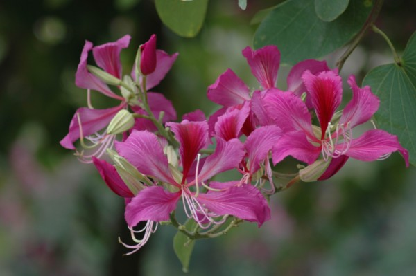

國立中正大學 校內地圖查詢系統
校園植物介紹
黑板樹 Alstonia scholaris
別稱：魔神樹
原產地：印度、非洲熱帶地區
特色：屬於夾竹棑科常綠大喬木，樹幹挺直俊秀，生長快速，株高可達30公尺，支葉輪生水平展開，葉掌狀複葉，樹體具白色乳汁，木材常做黑板材料，故以稱之。
本校目前栽有1228棵，散植校園各地，圖書資訊大樓前數株。 高大黑板樹是從高雄師範大燕巢校區移植至本校。
盾柱木 Peltophorum pterocarpum
別稱：黃燄木
原產地：熱帶亞洲，澳洲
特色：屬於蘇木科落葉喬木，葉柄及細枝椏披被褐色氈毛，羽狀複葉外形酷似鳳凰木，花頂生於枝端，總狀花序圓錐狀，色彩鮮黃，莢果扁平如豌豆般。
本校栽有398棵，植於管理學院南側及學人宿舍旁水土保持區。
小葉欖仁 Terminalia mantaly
別稱：雨傘樹，細葉欖仁
原產地：非洲
特色：屬於使君子科落葉喬木，主幹渾圓挺直，枝椏自然分層輪生於主幹四周，層層分明有序向四周開展，枝椏柔軟，小葉枇杷形，具短絨毛，冬季落葉後光禿柔細的枝椏美，益顯獨特風格; 春季萌發青翠的新葉，隨風飄逸，姿態甚為憂雅。樹形雖高，但枝幹極為柔軟,根群生長穩固後極抗強風吹襲，並耐鹽分，為優良的海岸樹種。
本校栽有1091棵，植於校園25米外環道兩旁，校門口分隔島及致遠樓等處。

豔紫荊 Bauhinia blakeana
別稱：香港櫻花，香港蘭花樹
原產地：中國廣東，香港
特色：屬於蘇木科常綠喬木，為羊蹄甲樹之雜交變異樹種，花葉此羊蹄甲樹及洋紫大，花形花色似洋蘭般雍容瑰麗，花期春，秋兩季，盛開時花朵佈滿全樹冠，因其為多倍體植株，開花後通常不結子，繁殖上祇能以接木或壓條法進行，校內栽植者概為接木者。
本校栽有252棵，植於校門橋頭北端至理學院間36米道路兩旁及散植各地。